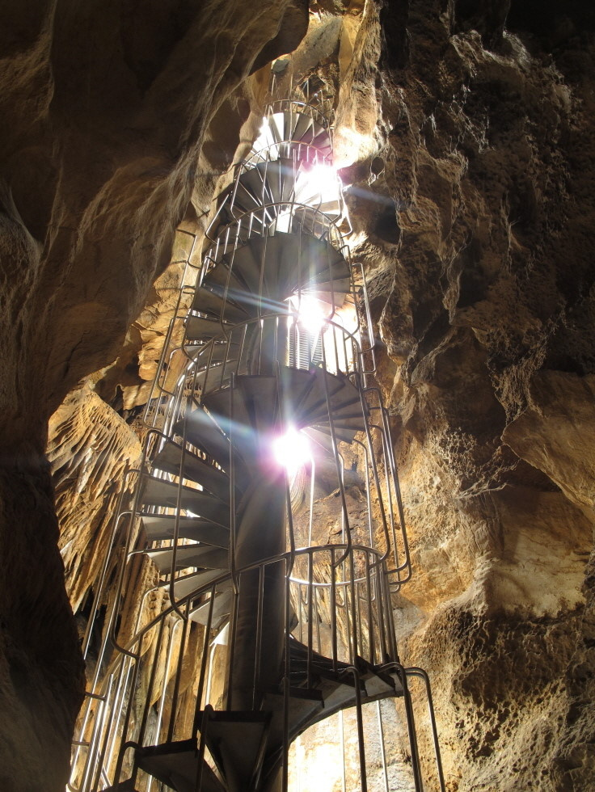
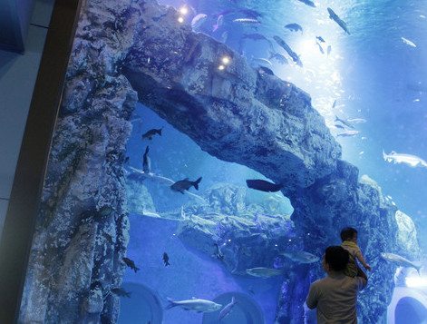
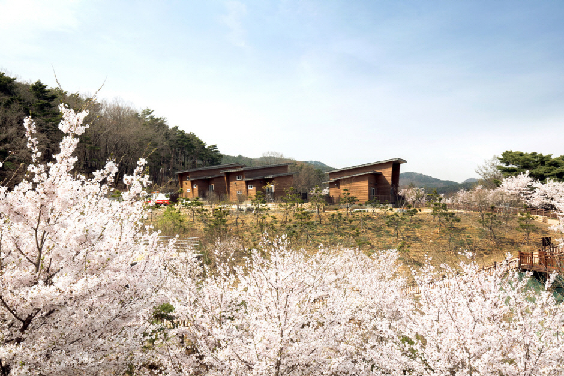
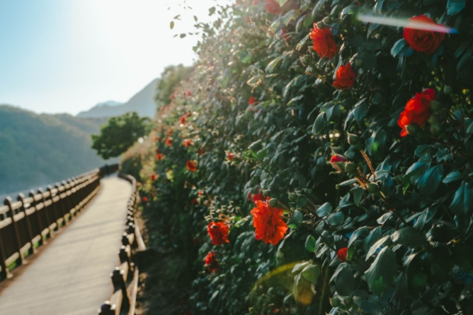

주요 관광지
-

고수동굴
정식명칭은 단양 고수리 동굴이며, 1976년 9월 24일 천연기념물로 지정되었다. 규모는 주굴 길이 600m, 지굴 길이 700m, 총연장 1,300m, 수직 높이 5m이다.
입장료 | 어른 11,000원 청소년 7,000원 어린이 5,000원 -

단양 다누리아쿠아리움
민물고기 생태관 다누리아쿠아리움에는 국내 어류 63종 2만여 마리, 해외 어류 87종 1,600여 마리 등이 있다. 세계 다양한 물고기와 남한간 토종 물고기인 황쏘가리, 은어, 납자루 등을 한 눈에 볼 수 있는 곳이다.
입장료 | 어른 10,000원 청소년 7,000원 어린이 6,000원
-

소백산 자연휴양림
소백산 자연휴양림은 충북 단양군 영춘면에 자리 잡고 있다. 휴양림에는 화전 민가, 숲속의 집 등의 숙박시설이 갖춰져 있다. 체험 시설로는 승마 체험장, 네트 어드벤쳐, 파크골프장 등이 마련되어 있다. 휴양림은 북단양IC와 가까운 거리에 있으며 주변에는 도담삼봉 등 단양을 대표하는 관광지가 많다.
-

소금정공원 장미터널
과거 나그네들이 쉬어가던 옛 상진고개에 조성된 공원이다. 터널을 따라 빨간 장미가 한 송이씩 피어나 산책로 한쪽을 예쁘게 수놓는다. 장미는 터널 안쪽 산책로와 터널 밖 수변 산책로에서 모두 감상할 수 있다.
맛집 및 카페
-

백향담
한식
주소 | 충북 단양군 단양읍 수변로 79 2층 -

카페다우리
카페/베이커리
주소 | 충북 단양군 대강면 선암계곡로 165 -
도깨비 카페
카페/베이커리
주소 | 충북 단양군 가곡면 두산길 254-6